プレイヤー(PLAYER)
入力(INPUTS)
すべての入力制限を有効化(EnableAllInputRestrictions)
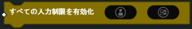ターゲット プレイヤー(Player) に対する利用可能な入力制限のすべてを有効化、または無効化します。
- パラメーター
プレイヤー(Player)
ブール(Bool)
入力制限を有効化(EnableInputRestriction)
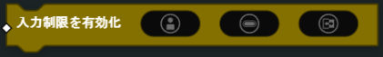ターゲット プレイヤー(Player) の指定された 入力制限アイテム(InputRestrictionsItem) を有効化、または無効化します。
- パラメーター
プレイヤー(Player)
入力制限アイテム(InputRestrictionsItem)
ブール(Bool)
所持品(INVENTORY)
プレイヤーの所持アイテムを置き換える(ReplacePlayerInventory)
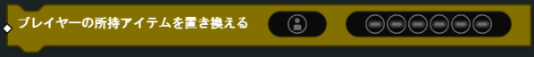ターゲット プレイヤー(Player) に新しい所持品アイテムを与えます。
- パラメーター
プレイヤー(Player)
所持品アイテム(InventoryItem) + 所持アイテムのメインウェポンアイテム(InventoryPrimaryWeaponsItem) + 所持アイテムの補助武器アイテム(InventorySecondaryWeaponsItem ) + 所持アイテムのキャラクター専門技能アイテム(InventoryCharacterSpecialtiesItem ) + 所持アイテムのオープンガジェットアイテム(InventoryOpenGadgetsItem ) + 所持アイテムの投擲アイテム(InventoryThrowablesItem ) + 所持アイテムの格闘武器アイテム(InventoryMeleeWeaponsItem)
所持アイテムの切り替えを強制(ForceSwitchInventory)
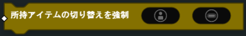ターゲット プレイヤー(Player) に提供された プレイヤー所持アイテムのスロットアイテム(PlayerInventorySlotsItem) に切り替えを強制させます。
- パラメーター
プレイヤー(Player)
プレイヤー所持アイテムのスロットアイテム(PlayerInventorySlotsItem)
所持アイテムの弾薬を設定(SetInventoryAmmo)
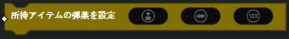ターゲット プレイヤー(Player) の指定された プレイヤー所持アイテムのスロットアイテム(PlayerInventorySlotsItem) の装填済みの弾数を設定します。
- パラメーター
プレイヤー(Player)
プレイヤー所持アイテムのスロットアイテム(PlayerInventorySlotsItem)
数値(Number)
所持アイテムのマガジン弾薬を設定(SetInventoryMagazineAmmo)
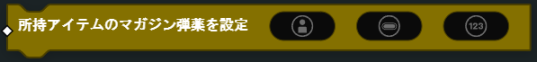ターゲット プレイヤー(Player) の指定された プレイヤー所持アイテムのスロットアイテム(PlayerInventorySlotsItem) のマガジン弾薬数を設定します。
- パラメーター
プレイヤー(Player)
プレイヤー所持アイテムのスロットアイテム(PlayerInventorySlotsItem)
数値(Number)
兵士(SOLDIER)
医療ガジェットを適用(ApplyMedGadget)
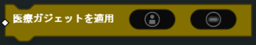医療ガジェットの効果をターゲット プレイヤー(Player) に適用します。
- パラメーター
プレイヤー(Player)
医療ガジェットタイプアイテム(MedGadgetTypesItem)
マンダウンを強制(ForceMandown)
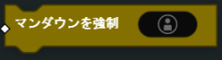ターゲット プレイヤー(Player) を「ダウン」状態にします（「ダウン」状態が無効化されている場合を除く）。
- パラメーター
プレイヤー(Player)
蘇生を強制(ForceRevive)
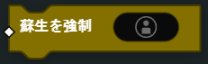「ダウン」状態にあるターゲット プレイヤー(Player) を復活させます。
- パラメーター
プレイヤー(Player)
補給(Resupply)
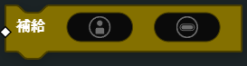指定された 再補給のタイプアイテム(ResupplyTypesItem) を使用して、ターゲットプレイヤー** に再補給します。
- パラメーター
プレイヤー(Player)
再補給のタイプアイテム(ResupplyTypesItem)
回復(Heal)
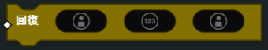回復者 プレイヤー がターゲット プレイヤー に与えられる瞬間的なライフの回復量を設定します。
- パラメーター
プレイヤー(Player)（ターゲット）
数値(Number)
(オプショナル)プレイヤー(Player)（回復者）
ダメージ(DealDamage)
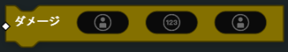攻撃する プレイヤー(Player) がターゲット プレイヤー(Player) に与えるダメージ量を設定します。
- パラメーター
プレイヤー(Player)（ターゲット）
数値(Number)
(オプショナル)プレイヤー(Player)（提供者）
プレイヤー兵士を設定(SetPlayerSoldier)
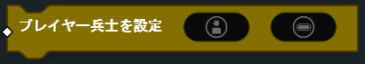指定された プレイヤー(Player) の使用する兵士を プレイヤー兵士アイテム(PlayerSoldiersItem) で設定します。 選択した兵士は、そのプレイヤーチームの勢力から使用可能な兵士でなければなりません。 選択しない場合、選択した兵士は設定されません。 （例：チームの勢力がバッドカンパニー2 アメリカ軍の場合、そのプレイヤーはバッドカンパニー2 アメリカ兵のみ選択できます）
- パラメーター
プレイヤー(Player)
プレイヤー兵士アイテム(PlayerSoldiersItem)
プレイヤーの最大ライフを設定(SetPlayerMaxHealth)
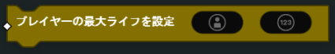ターゲット プレイヤー(Player) の最大ライフを設定します。
注釈
プレイヤーの最大ライフが1000を超えることはできません。
- パラメーター
プレイヤー(Player)
数値(Number)
マンダウンをスキップ(SkipMandown)
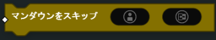ダウン状態をスキップし、キルされたときに出撃画面に直接移動するように、ターゲット プレイヤー を設定します。
- パラメーター
プレイヤー(Player)
ブール(Bool)
テレポート(Teleport)
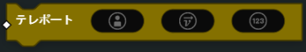有効な範囲内でターゲットをテレポートします。
- パラメーター
プレイヤー(Player)
ヴェクター(Vector)（位置）
数値(Number)（ヨー軸回転）